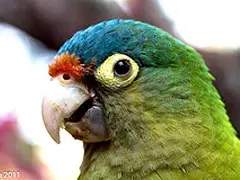
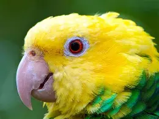

Pericos y sus dietas
Los pericos son aves muy adaptables y tienen dietas variadas. En esta página puedes ver su apariencia, los alimentos que comen y datos curiosos de cada especie.
Bienvenido
Explora los pericos más importantes de Costa Rica, conoce sus colores, comidas y hábitos. Primero inicia sesión para acceder a toda la información disponible.
Presentación breve: esta página te muestra los pericos más conocidos en Costa Rica. Cada pestaña contiene imágenes, dieta y datos curiosos sobre una especie.
Inicia sesión para acceder a datos adicionales sobre los pericos.
Presentación en curso...

Imagen enviada para la opción de Frente naranja.
Perico frente naranja
Nombre científico: Amazona autumnalis
Este perico muestra una frente naranja brillante y plumas verdes con reflejos azules. Vive en bosques húmedos, cercanías de ríos y zonas protegidas del Caribe y Pacífico de Costa Rica.
Dieta
- Frutas tropicales
- Semillas
- Flores
- Nueces blandas
- Brotes tiernos

Imagen enviada para la opción de Cabeza amarilla.
Perico cabeza amarilla
Nombre científico: Amazona oratrix
Su cabeza completamente amarilla lo hace fácil de identificar. Habita áreas de bosque seco, bordes de bosque y zonas agrícolas con árboles frutales.
Dieta
- Semillas de palma
- Frutas suaves
- Hojas tiernas
- Flores
- Algunos insectos pequeños

Perico ala amarilla
Nombre científico: Amazona auropalliata
Su franja amarilla en las alas lo distingue. Prefiere bosques húmedos y márgenes de cultivos, donde puede encontrar frutas y semillas en abundancia.
Dieta
- Frutas maduras
- Semillas de árboles
- Flores y néctar
- Brotes verdes
- Cultivos de maíz en algunas zonas

Perico lomo amarillo
Nombre científico: Amazona ochrocephala
También llamado cotorra cabeza amarilla o perico amarillo, tiene un lomo con tonos claros. Se le encuentra en bosques tropicales y zonas de ribera.
Dieta
- Frutas de selva
- Nueces blandas
- Semillas
- Flores
- Pétalos y brotes

Imagen enviada para la opción de Perico verde.
Perico verde
Nombre científico: Brotogeris jugularis
Es más pequeño que los loros amazónicos. A menudo se lo ve en jardines, huertos y zonas abiertas, cazando frutas y semillas.
Dieta
- Frutas pequeñas
- Semillas de gramíneas
- Flores
- Insectos ligeros
- Hojas tiernas
Alimentos comunes para los pericos
En general, los pericos costarricenses se alimentan de:
- Frutas tropicales como guayaba, mango y papaya
- Semillas de árboles y palmas
- Flores y néctar
- Brotes tiernos y hojas suaves
- Algunos cultivos agrícolas como maíz y guineo